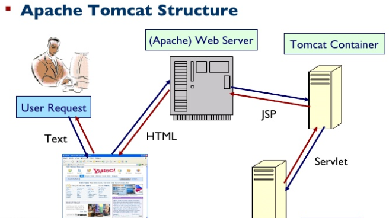

1. Servidor de aplicaciones
Un servidor de aplicaciones es un software que ayuda a un servidor web a ejecutar scripts o etiquetas del lado del servidor en páginas web. Cuando se solicita una página de este tipo al servidor, el servidor web la reenvía al servidor de aplicaciones para que la procese antes de proporcionarla al navegador. Para obtener más información, consulte Cómo funciona una aplicación web.
Macromedia ColdFusion, Macromedia JRun Server, Microsoft.NET Framework, IBM WebSphere y Apache Tomcat son servidores de aplicaciones típicos.
